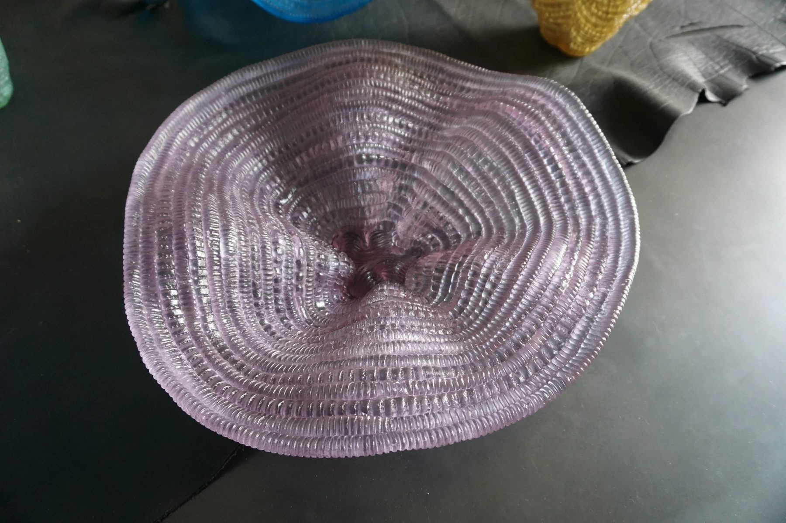
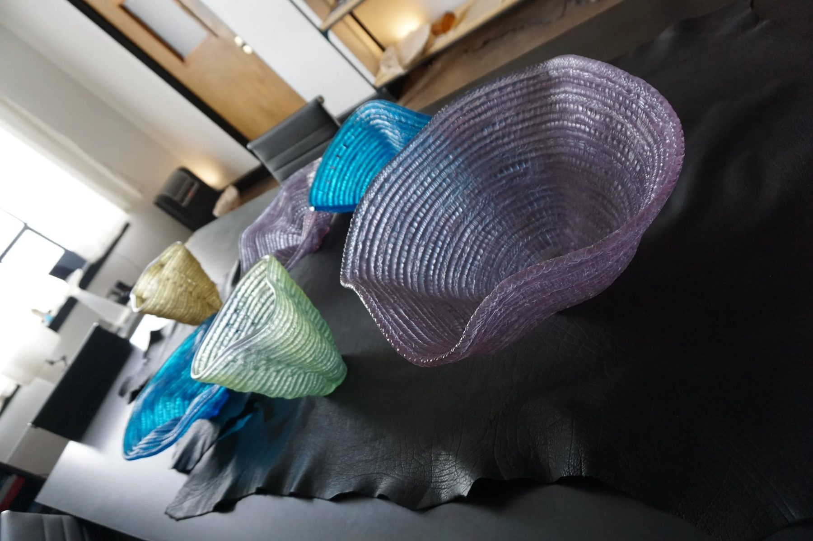
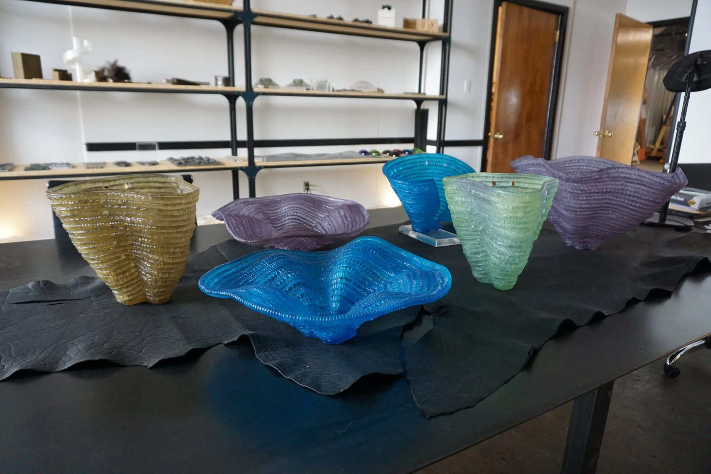
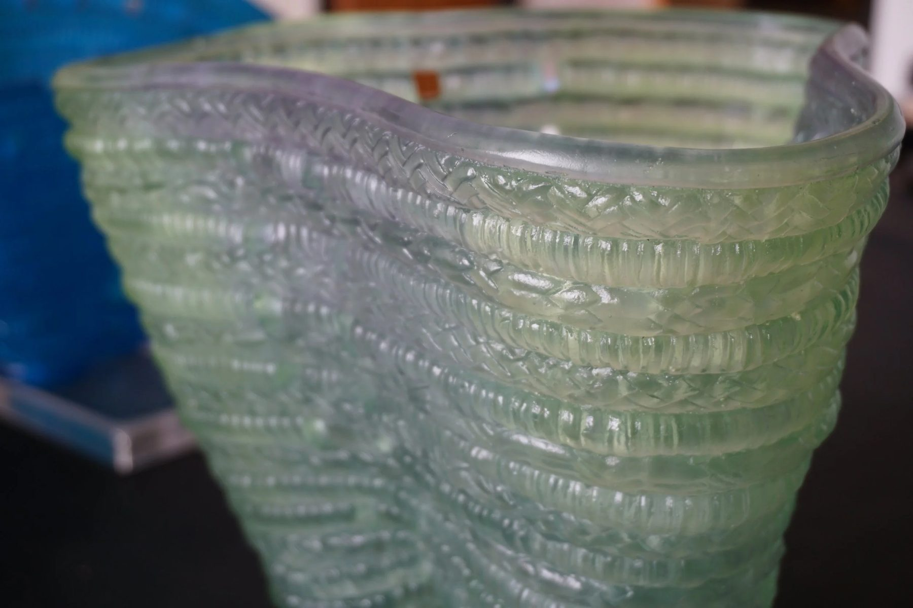
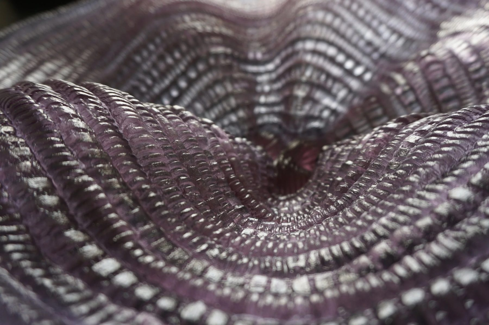
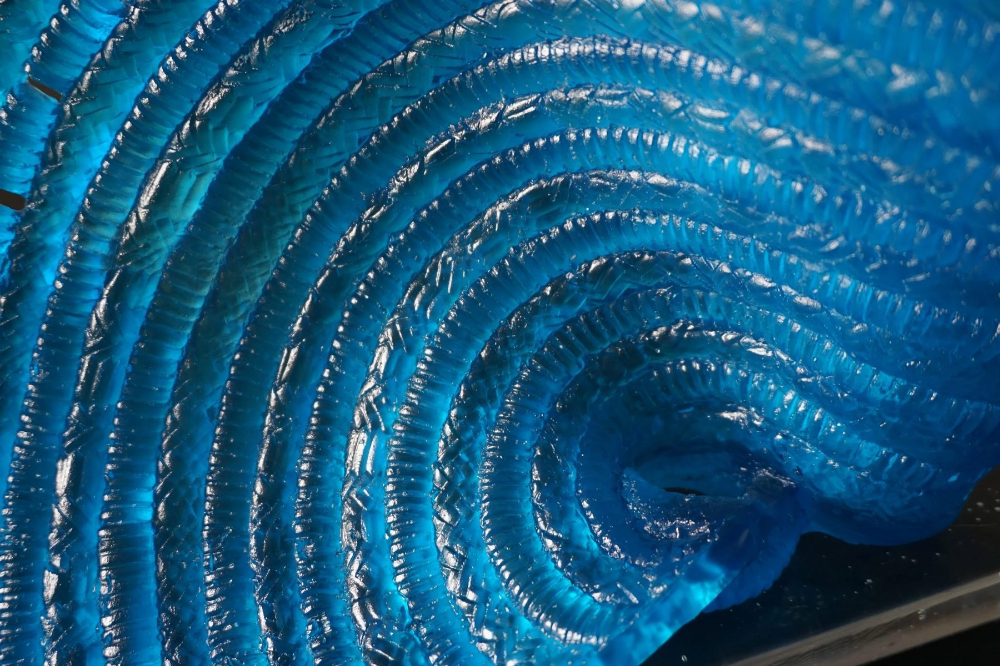
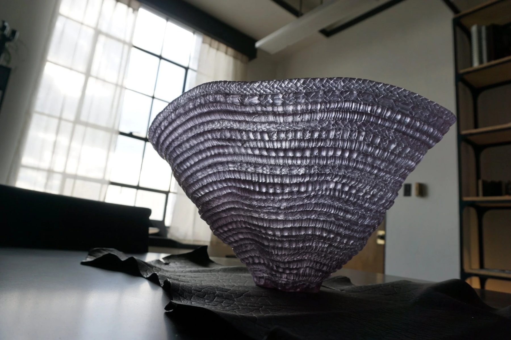
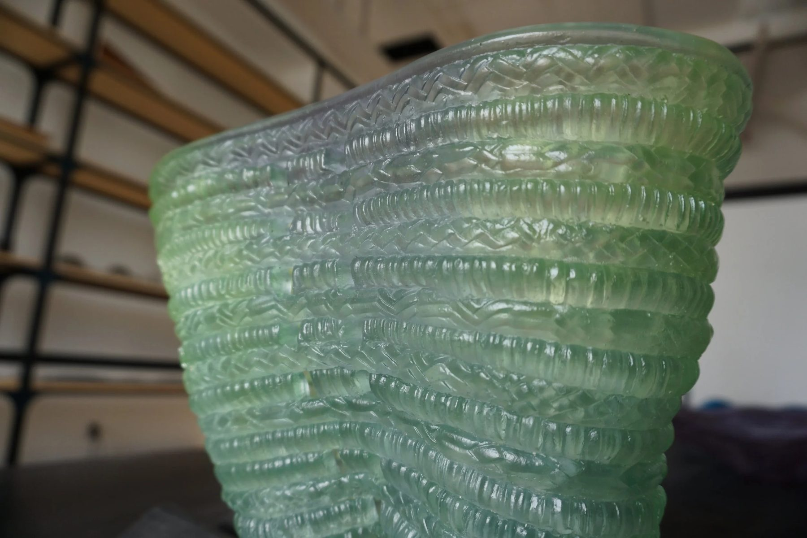
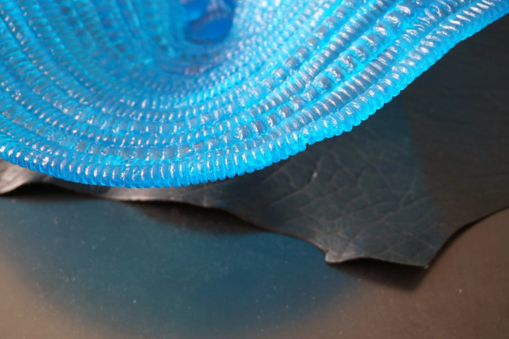

Glass / 2022 / Chicago, IL
Woven Vessels
Candone Wharton

Cast lead crystal vessels molded from the artist's earthenware originals.
The work
Candone Wharton works in ceramic, black earthenware and sometimes terracotta. Her vessels look woven but are ceramic, and she wanted to see pieces she had loved for a long time come to life in a new material and a new palette: purples, lime greens, jades.
The material question
Something woven, made to let light through. Turning an opaque ceramic translucent gives the piece a second life in its shadows and lets it glow from within, but only if the weave survives the mold.
The making
As mold makers we preserve originals wherever we can. The earthenware got the same natural water-soluble sealer as Maria Gaspar's Jail Debris; we molded it and cast in lead crystal, and the originals came back intact for her to show.
In place
“There's a lot of optical spice in the combination of something woven and then allowing light to pass through it,” says Ally Reza.
Details
- Year
2022 - Location
Chicago, IL - Category
Glass - Materials
Lead crystal
Credits
- Artist: Candone Wharton
- Glass: Ally Reza
Studio
- ChiLab Studio
- Chicago, Illinois
- Established 2013








Bring us a drawing,
a model, or a hunch.
The studio
Specialty material projects for architecture, interior design, public art, and the fine arts.
ChiLab Studio, Chicago, Illinois. Established 2013.
What we do
- Metal casting
- Glass
- Finishes
- Digital fabrication
- Metal fabrication
- Restoration
- Project management
Contact
info@chilabstudio.com
chilabstudio.com
Instagram @chilabstudio